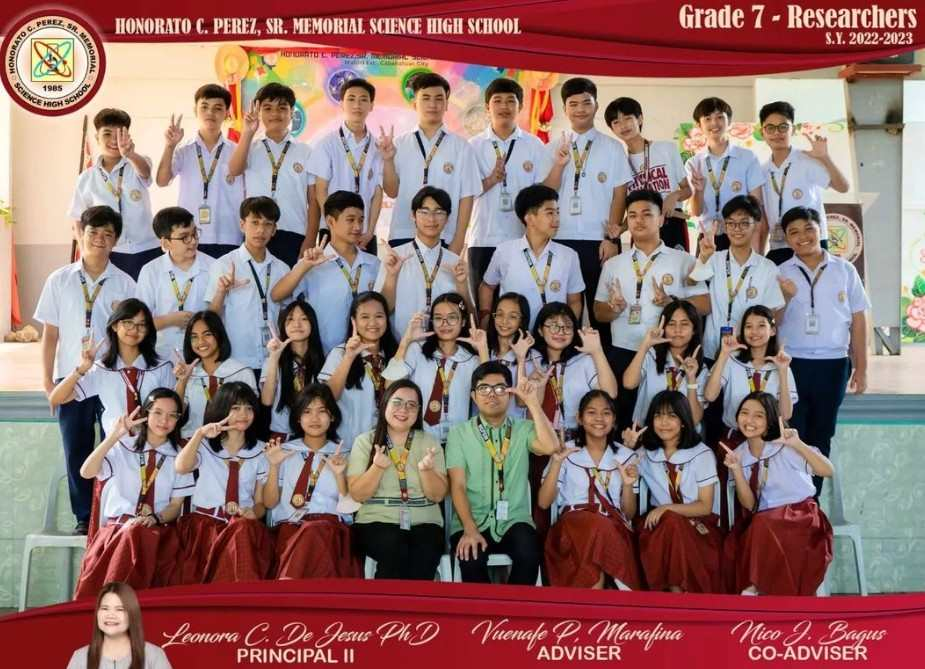
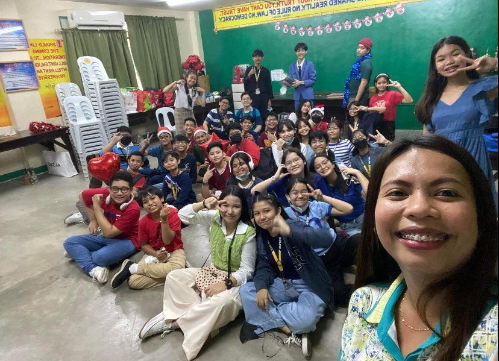

WELCOME TO THE DIAMOND WEBSITE
Home
About
Diamond's oath
History
Students
Officers
Filipino
Class
Awards
A short Diamond story
Two sections from Grade 7 — Discoverers and Researchers, also known as “Disco” and “Rese”, was binded together to form something shiny, glimmering, even.
15 students chosen by their former class advicers from each section, creating a classroom with 30 shining diamonds to conquer through Grade 8 as a section named Diamond.
 
Ma’am Pamela A. Pelayo, Diamond’s class adviser, together with Sir Jeric C. Calleja, Diamond’s co-adviser guides, helps, and leads the 30 diamonds through every pressure to get to success. Not only them, but as well as the other subject teachers accompany the students to shine just like their section name—Diamond
Originally 32 Diamond were formed, until before the start of classes, there were error on the list of enrolees, Gabriel Luciano was not supposed to be one of Diamond as he is now in the USA. Then, after 1st quarter another shining gem was lost as he lost his brightness, he was transferred to CIC, he is Clyde de Leon, leaving the total of section to 30.
30 students from 2 separate sections that formed them to have thriving excellence, creative and innovative minds, and bursting energy. Surely, joining them together as one will make talents and ideas flourish and shine. With each other, assembled as a shiny diamond, they will surely surpass academic milestones and achievements with their advisers as the pillars that are holding them together as one. “Together, we are going to keep shining like diamonds in the sky, slowly achieving our dreams like a shooting star that every one will see. We will become that vision of ecstacy. “ - VIII DIAMOND